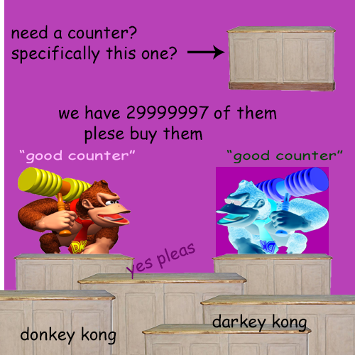
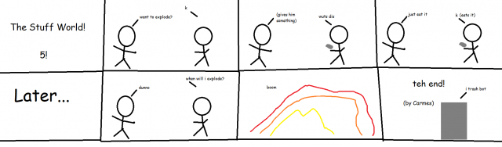

"The developers didn't program for the lettuce, so the BK employee reverts to the T-pose, removing all bounding boxes. This allows us to skip the fridge opening animation, saving 2 seconds on the Whopper any% speedrun."
$5.00 | ~8 ghost dollars | ⭐25 coins
Does not include potential cost from surprise mechanics (they're not lootboxes!!!), purchases from Shef Kerbi's Apparel or preordering the Special Edition
-------------------------
BREAKED NEW
by Shef Kerbi
After Bon Starbuckle's disappearence after the release of SKNN #25, authorities of Dreem Lend have been trying to locate Bon so he can get back to working on Ask Bon and Bon's Cat. Recently, some footage surfaced of a person who claims they know what Bon is doing after he disappeared from SKNN:
"...Bon is fishing
For boots
So far he's caught only fish"
We have determined the approximate location of Bon to be somewhere within the universe, however further evidence may allow us to find his exact location. More on the issue to come.

AUTOMATED BREAKAGE OF NEWS
by CrazeePi's Disembodied Voice
Recently, due to a lack of things happening causing Shef Kerbi employees to report lackluster news, a new device called Talk to Transformer the The New News Generation Machien. Upon activation, the The New News Generation Machien will go out and cause mass disruption of society, a.k.a. stuff to report as news.
BREAKING NEWS
by the The New News Generation Machien
Shef Kerbi was found eating a meal of rice and beans. He was rushed to the hospital and later died. (wait what)
UPDATE: He got better.
BREAKING NEWS
by the The New News Generation Machien
A man has been found eating a sandwich.
The man was found eating a sandwich inside a restaurant in the area of the intersection of Broadway and King Street in Burlington.
Police said they don't know what prompted the man to eat his sandwich, but the incident was over before any police arrived. (For more, click here)
The man was taken away by police and taken to hospital.
BREAKING NEWS
by the The New News Generation Machien
A dog has just successfully managed to become a dog. It's only a test.
He didn't make it, unfortunately." He then described his "sadness".
"I hope he doesn't be the dog in some of the pictures," he adds, "because that's not me."
CATS EXPLODED
by Carmes
5 Cats, named Num, Num, Num, Num and Num, have exploded in a pizza restaurant. They were last seen throwing olives at the cashier in that restaurant.
To get more info, we have interviewed the cashier.
Cashier: They were throwing olives at me and angrily meowing.
Carmes: Why?
Cashier: No idea. I can retell what happened in this script-like thing:
Suddenly, THE 5 CATS smash through the window, they start scratching the tables.
PERSON: Ay!
PERSON: Get your paws off my pizza!
THE 5 CATS run to the till. They lick their lips, then scratch it, taking the money that fell on the floor.
CASHIER comes in, angrily.
CASHIER: Stop it! It’s against the law!
THE 5 CATS are now angry, and they run to CASHIER.
THE 5 CATS: MEOW! MEOW! MEOW! MEOW! (throws olives at cashier)
CASHIER: That’s it! I’m bringing out my laser! (gets laser out and points at the cats)
THE 5 CATS try to scratch it. Immediately, there is an explosion, and THE 5 CATS are obliterated.
There are rumours that the cats are bank robbers, or members of the Mafia.
BREAKING NEWS
by Carmes
It has been discovered that one of the cats that exploded in a pizza restaurant was a hypnotised Gernfald.

THANOS CAT IN MEANKREEFT URRF
by Carmes
Memers across Dreem Lend are going crazy that a Thanos Cat will be added to an upcoming game named Meankreeft Urrf.
To celebrate this, TSM_Liquid_FaZe_Ninja has done a livestream of himself snapping his fingers for 5 hours non-stop.
This is the new Thanos Cat:

(Unfortunately, Thanos Cat lost the Enfanety Gurntlate)
Also, Speida Mehn has posted on his Treeta in reaction to the Thanos Cat thing:
He then disintegrated.
Now I don't wanna give my own opionion but...
OPIONION WITH SHEF KERBI
Opposum Gun leaked on the internet
So we told you Shef Kerbi News Network fans on our Scratch page that you could post anything with the #SKNN hashtag and you could end up in our paper! In this episode, we'll respond to some of your feedback with the new SKNN format, as well as show some of your cool stuff!
We began this issue's section with
"https://www.youtube.com/watch?v=o3UgRO8VvBI here you go they are professionals they will help you"
and here were your responses:
Timman999999999 wrote:
"Remember me from the first opionion column? That was back in February."
Wow, that was such a long time ago I nearly forgot!! Pretty sure SKNN has been a part of Shef Werld longer than it was independent at this point.
orangeoceanelevatorservices wrote:
"I was going to my normal shopping at the local blayyyd nite and co mart and then I saw that it was closed and I saw this sign at the building.
This was the attached image:

Yeah, we bought Blayyd Nite and Co Mart. Pretty big thing considering that they're one of the biggest supermarket chains in Dreem Land. Stay tuned for more information.
If you would like to submit your own opionion for Shef Kerbi, just go to our social media, on Twitter, Instagram or Scratch.
But prefably Scratch because that's what everyone uses
----------------
COMIX
by Keynsun DDDO and Carmes
Keynsun DDDO - Ghost Electronics Store Part 3

Carmes - The Stuff World! 5!

weather
written by Zeke Teddy
Today it's actually a little bit warmer which is nice, min of 6 and max of 20
Tomorrow, is it warmer again? lolno the universe just likes messing with us, min 1 max 12
{kind=link}
THANK YOU FOR WATCH. PLEASE TUN E IN NEXT TIME FOR MORE NESW

Shef Kerbi News Network follows the guidelines and conventions set by the 1984 High Quality News Act of Dreem Lend, which states
that any news published is to be of a high quality, is to remain unbiased and to show all sides of a news report, does not attack anyone, and protects the privacy
of people whose identities don't want to be revealed.
If you would like to file a complaint regarding content use, please message SKNN through our Scratch account. We also have a Twitter and Instagram account if you
prefer.
Shef Kerbi News Network respects the ancestors of Cappy Town, and understands that they are the reason why Dreem Lend exists.
Shef Kerbi News Network is proud to be a subsidiary of Shef Werld
this website is best viewed with Ned's Escape